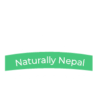
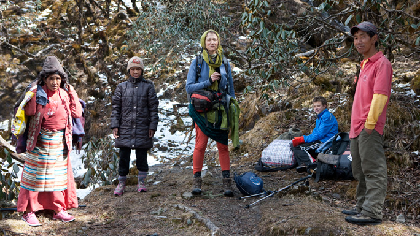
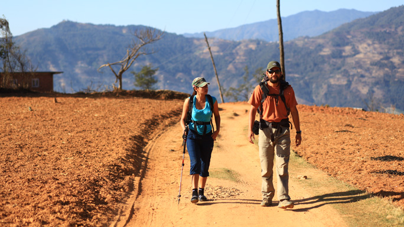
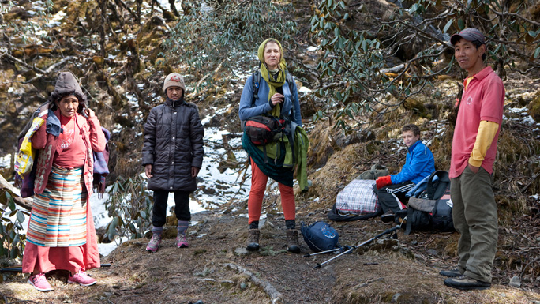
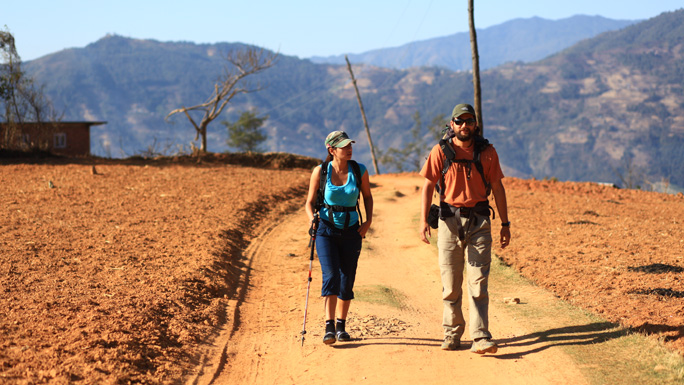

TREKKING
Nepal is one of the world's premier destinationsfor first-time and experienced trekkers.
Nepal is home to network of trails also called the Great Himalaya Trails, an extensive trail system that covers Nepal from Humla and Darchula in the west to Kanchenjunga in the east. The diversity of trekking in Nepal cannot be found in any other region of the world. In fact, the lowest point in Nepal is 59 m above sea-level in the Terai region while the highest point is Everest, 8,848 m above sea-level, the two points are, in a straight line, only 200 kilometres apart.
The majority of visitors to Nepal come in via the Tribuvan International Airport in Kathmandu. It is in Kathmandu that trekkers need to acquire their permits and other documentation, either from a trekking agent or from the appropriate offices. These documents will be checked along the trekking route. For those with little time to spend in Nepal there are half-day hikes from Kathmandu to witness breathtaking Himalayan views otherwise trek for weeks over stunning challenging mountain passes.
Up to the mid 1960s only a few trekkers had generally visited Nepal and back then as part of groups of expedition followers. Many of the big expeditions of the day encouraged trekkers to sign up in an attempt to help balance the funding. Trekking in Nepal today is completely different to that of the 1960s. In all the main trekking areas, the National Parks and Conservation Areas lodges have been established where trekkers can find accommodation, food and meet other trekkers and locals along the way. The majority of the trails are well maintained and in many cases are sign-posted.
The lodges are well appointed and have facilities for charging batteries and the larger villages often have email facilities. The length, the difficulty and timing of the treks vary greatly and to add to that once outside of the main trekking areas transport becomes more problematic and often involves at least two journeys made on domestic scheduled flights. The three main trekking areas and therefore the most easily accessible are the Everest, Langtang and the Annapurna regions. Annapurna and Langtang have a slight advantage in so much that they can be reached via road connections. Trekkers are of course rewarded when they venture further afield as well! Great Himalaya Trails has extensive information on other trekking regions, which are accessible by domestic flights, such as Kanchenjunga, Makalu, Dolpo, and the Far West. Several days of trekking is required to reach the higher mountain areas from the local centers of population and administration.
 Nepal has six distinct and diverse vegetation zones ranging from Tropical below a 1,000 m through Sub-tropical 100m - 200m, Lower Temperate 1,700 m - 2,700 m, Upper Temperate 2,400 m - 3,000 m, Subalpine 3,000 m - 4,000 m and Alpine 4,000 m to the snowline above the snowline it is a Himalaya tundra like wilderness. Each of these zones is well populated with the appropriate flora and fauna, although sometimes the rarer examples might be hard to find. Domestic flights generally occur early morning, and so if two domestic flights are required to reach the start of the trek, appropriate timing should be allowed. Although the popular treks in Kanchenjunga, Everest, Manaslu, Annapurna are able to provide lodge accommodation the less frequented treks in those areas and also in other areas west of Annapurna will generally require camping style trek support.
 Trekkers can find a trail for any time of year. The southern areas of Nepal receive higher levels of precipitation. However, some routes along the Great Himalaya Trails lie in the rain shadow, a dry area on the leeward side of a mountains namely Mustang to the north of Annapurna and Manaslu, Dolpo to the north of Dhaulagiri and the far west of Nepal to the north of Saipal Himal. Post monsoon the weather tends to be clearer. Winter is good but colder with shorter days and spring can be affected by seasonal rain and snow storms. Summer is short and is quickly followed by the monsoons.
However, the rains are not continuous for 24 hours a day and of course the rains bring the flowers to life. It is also a perfect time to consider one of the regions in the rain shadow which typically feature a more barren Tibetan type scenery as opposed to the greenness of other areas.
Trekkers can find a trail for any time of year. The southern areas of Nepal receive higher levels of precipitation. However, some routes along the Great Himalaya Trails lie in the rain shadow, a dry area on the leeward side of a mountains namely Mustang to the north of Annapurna and Manaslu, Dolpo to the north of Dhaulagiri and the far west of Nepal to the north of Saipal Himal. Post monsoon the weather tends to be clearer. Winter is good but colder with shorter days and spring can be affected by seasonal rain and snow storms. Summer is short and is quickly followed by the monsoons.
However, the rains are not continuous for 24 hours a day and of course the rains bring the flowers to life. It is also a perfect time to consider one of the regions in the rain shadow which typically feature a more barren Tibetan type scenery as opposed to the greenness of other areas.
 It is important for tourists to know that the main income generating activity of the people from the hill regions is tourism, and they typically earn wages working as trekking porter or guide. Hiring a porter does not mean that you are weak, it means you value the Nepali culture, you are providing an extended Nepali family with an income and at the same time you are making a friend and trekking with a local person who is well versed in the local cultures, festivals, and all the other issues that can turn a good trek into an outstanding experience of a life time. It is obviously possible to trek alone or without a Nepali guide, but would you know what to do in a major storm, zero visibility and temperatures and at possibly 5,000 m? Make sure you have all the correct permits as required, and be environmentally and culturally aware.
Up to the mid 1960s only a few trekkers had generally visited Nepal and back then as part of groups of expedition followers. Many of the big expeditions of the day encouraged trekkers to sign up in an attempt to help balance the funding. Trekking in Nepal today is completely different to that of the 1960s. In all the main trekking areas, the National Parks and Conservation Areas lodges have been established where trekkers can find accommodation, food and meet other trekkers and locals along the way. The majority of the trails are well maintained and in many cases are sign-posted.
The lodges are well appointed and have facilities for charging batteries and the larger villages often have email facilities. The length, the difficulty and timing of the treks vary greatly and to add to that once outside of the main trekking areas transport becomes more problematic and often involves at least two journeys made on domestic scheduled flights. The three main trekking areas and therefore the most easily accessible are the Everest, Langtang and the Annapurna regions. Annapurna and Langtang have a slight advantage in so much that they can be reached via road connections. Trekkers are of course rewarded when they venture further afield as well! Great Himalaya Trails has extensive information on other trekking regions, which are accessible by domestic flights, such as Kanchenjunga, Makalu, Dolpo, and the Far West. Several days of trekking is required to reach the higher mountain areas from the local centers of population and administration.
 Nepal has six distinct and diverse vegetation zones ranging from Tropical below a 1,000 m through Sub-tropical 100m - 200m, Lower Temperate 1,700 m - 2,700 m, Upper Temperate 2,400 m - 3,000 m, Subalpine 3,000 m - 4,000 m and Alpine 4,000 m to the snowline above the snowline it is a Himalaya tundra like wilderness. Each of these zones is well populated with the appropriate flora and fauna, although sometimes the rarer examples might be hard to find. Domestic flights generally occur early morning, and so if two domestic flights are required to reach the start of the trek, appropriate timing should be allowed. Although the popular treks in Kanchenjunga, Everest, Manaslu, Annapurna are able to provide lodge accommodation the less frequented treks in those areas and also in other areas west of Annapurna will generally require camping style trek support.
Trekkers can find a trail for any time of year. The southern areas of Nepal receive higher levels of precipitation. However, some routes along the Great Himalaya Trails lie in the rain shadow, a dry area on the leeward side of a mountains namely Mustang to the north of Annapurna and Manaslu, Dolpo to the north of Dhaulagiri and the far west of Nepal to the north of Saipal Himal. Post monsoon the weather tends to be clearer. Winter is good but colder with shorter days and spring can be affected by seasonal rain and snow storms. Summer is short and is quickly followed by the monsoons.
However, the rains are not continuous for 24 hours a day and of course the rains bring the flowers to life. It is also a perfect time to consider one of the regions in the rain shadow which typically feature a more barren Tibetan type scenery as opposed to the greenness of other areas.  It is important for tourists to know that the main income generating activity of the people from the hill regions is tourism, and they typically earn wages working as trekking porter or guide. Hiring a porter does not mean that you are weak, it means you value the Nepali culture, you are providing an extended Nepali family with an income and at the same time you are making a friend and trekking with a local person who is well versed in the local cultures, festivals, and all the other issues that can turn a good trek into an outstanding experience of a life time. It is obviously possible to trek alone or without a Nepali guide, but would you know what to do in a major storm, zero visibility and temperatures and at possibly 5,000 m? Make sure you have all the correct permits as required, and be environmentally and culturally aware.